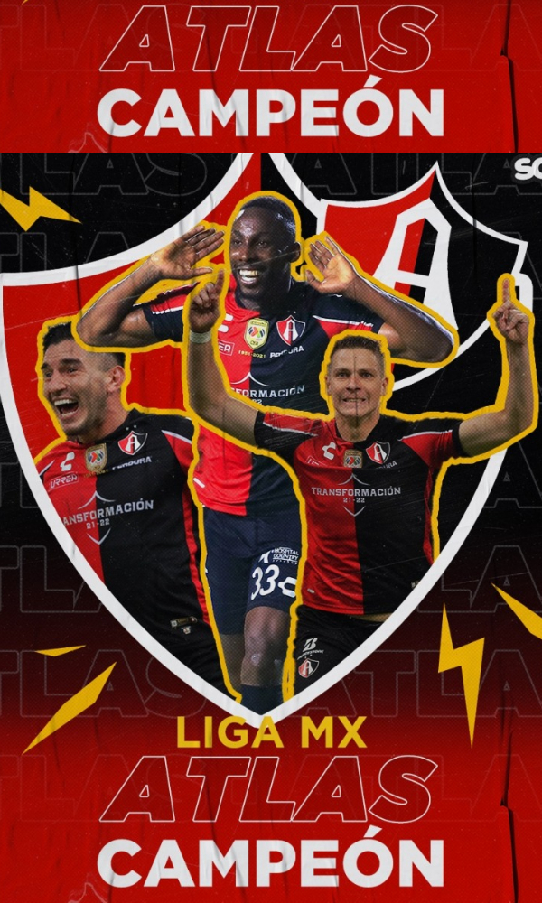

se hizo presente la polémica arbitral, que le dio un penal a los Zorros, ejecutado de buena forma por Julio Furch.
Al minuto 41, el VAR comenzó a revisar una posible mano en el área del Pachuca, situación que llevó al árbitro
Fernando Hernández a revisar él mismo la jugada. Finalmente señaló la pena máxima a favor de Atlas.
Es un imenso logro cuando se toma en cuenta que antes de coronarse en el Apertura 2021, el equipo
rojinegro había tenido una sequía de 70 años sin ganar un título en primera división.
Estas son las tres mayores virtudes del bicampeonato de Atlas.

¡Embajador de lujo! 'Chucky' Lozano, presente en la final Pachuca vs Atlas de la Liga MX.
La final del Clausura 2022 de la Liga MX está en curso; Pachuca y Atlas buscan coronarse como campeones del
torneo en el Estadio Hidalgo, recinto que tuvo un invitado de lujo, Hirving Lozano. El Chucky Lozano fue el
embajador de la final de vuelta del Clausura 2022 y fue el encargado de llevar el trofeo de campeón hasta
el centro del terreno de juego previo al arranque del partido.
El argentino Julio César Furch empató para Atlas a los 45 minutos por la vía del tiro penal después de que
el árbitro Fernando Hernández lo decretó tras revisar una jugada en el VAR donde el defensor Daniel Aceves
tocó el balón con la mano dentro del área.
Los “Rojinegros” del Atlas consiguieron su tercera estrella tras las obtenidas en la temporada 1950-1951 y
en el torneo Grita México A21 con un marcador global de 3-2 después de ganar 2-0 en el partido de ida.
En el encuentro de vuelta, disputado en el estadio Hidalgo de Pachuca, el equipo local se puso en ventaja
a los ocho minutos por conducto del ecuatoriano Romario Ibarra, quien definió con un disparo dentro del
área tras eludir a dos adversarios.
“Fue una final muy disputada, Pachuca fue un difícil y excelente rival, pero el corazón de este equipo pudo
más para llevarnos el bicampeonato”, dijo a Fox Sports el colombiano Camilo Vargas, portero del Atlas.


Los zorros del Atlas, el equipo representativo del estado de Jalisco, se hizo con el título de bicampeón en
el Estadio Hidalgo, la casa de los Tuzos de la ciudad de Pachuca, quienes a pesar de ganar el partido,
perdieron en el global.
Para más información contactanos en nuestra red social
Facebook
Uriel Jesús Hernández López. Grupo: 638. Capacitación de TIC´S
el Estadio Hidalgo, la casa de los Tuzos de la ciudad de Pachuca, quienes a pesar de ganar el partido,
perdieron en el global.
Uriel Jesús Hernández López. Grupo: 638. Capacitación de TIC´S